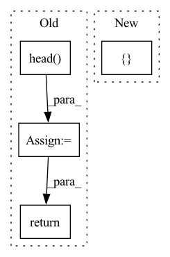

Pattern ID :31664
Before Change
def forward_test(self, img, img_metas, **kwargs):
x = self.extract_feat(img)
head_outs = self.head( x) // y1,y2,y3
if "eval" in kwargs and kwargs["eval"]:
return self.head.get_eval_bboxes(head_outs)
head_det_inputs = [head_outs, img_metas,kwargs]
result = self.head.get_det_bboxes(*head_det_inputs)
After Change
def forward_test(self, x, img_metas, **kwargs):
head_det_inputs = [ x, img_metas,kwargsIn pattern: SUPERPATTERN
Frequency: 3
Non-data size: 4
Instances Fragment ID: 92376979
Project Name: wuzhihao7788/yolodet-pytorch
Commit Name: a2a9ba06faada22b3f4d8b38a4d53fb63afdf35a
Time: 2020-10-29
Author: 753993117@qq.com
File Name: yolodet/models/detectors/YOLOv4Detector.py
M Class Name: YOLOv4Detector
N Class Name: YOLOv4Detector
M Method Name: forward_test(3)
N Method Name: forward_test(3)
M Parent Class: BaseDetector
N Parent Class: BaseDetector
M File Name: yolodet/models/detectors/YOLOv4Detector.py
N File Name: yolodet/models/detectors/YOLOv4Detector.py
M Start Line: 101
M End Line: 107
N Start Line: 100
N End Line: 100
Before Change
The predicted GSP.
X = self.transform(X)
X = self.head( X)
Y = self.transform(Y)
Y = self.head(Y)
return torch.bmm(X.unsqueeze(1), Y.unsqueeze(2)).squeeze()
class TransformerAdapter(torch.nn.Module):After Change
X = self.transform(X)
Y = self.transform(Y)
res = self.dot(torch.cat([ X, Y Fragment ID: 92376981
Project Name: wfondrie/depthcharge
Commit Name: ccf3d34d18f907802f0e4f3daab0845045df0390
Time: 2021-07-09
Author: fondriew@gmail.com
File Name: depthcharge/embedder/model.py
M Class Name: SpectrumTransformer
N Class Name: SpectrumTransformer
M Method Name: predict(3)
N Method Name: predict(3)
M Parent Class: torch.nn.Module
N Parent Class: torch.nn.Module
M File Name: depthcharge/embedder/model.py
N File Name: depthcharge/embedder/model.py
M Start Line: 458
M End Line: 462
N Start Line: 454
N End Line: 457
Before Change
def forward_test(self, img, img_metas, **kwargs):
x = self.extract_feat(img)
head_outs = self.head( x) // y1,y2,y3
if "eval" in kwargs and kwargs["eval"]:
return self.head.get_eval_bboxes(head_outs)
head_det_inputs = [head_outs, img_metas,kwargs]
result = self.head.get_det_bboxes(*head_det_inputs)
After Change
def forward_test(self, x, img_metas, **kwargs):
head_det_inputs = [ x, img_metas,kwargs Fragment ID: 92376982
Project Name: wuzhihao7788/yolodet-pytorch
Commit Name: a2a9ba06faada22b3f4d8b38a4d53fb63afdf35a
Time: 2020-10-29
Author: 753993117@qq.com
File Name: yolodet/models/detectors/YOLOv5Detector.py
M Class Name: YOLOv5Detector
N Class Name: YOLOv5Detector
M Method Name: forward_test(3)
N Method Name: forward_test(3)
M Parent Class: BaseDetector
N Parent Class: BaseDetector
M File Name: yolodet/models/detectors/YOLOv5Detector.py
N File Name: yolodet/models/detectors/YOLOv5Detector.py
M Start Line: 109
M End Line: 115
N Start Line: 109
N End Line: 109